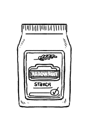

arrowroot starch
Arrowroot starch comes from the rhizomes of several tropical plants, traditionally from Maranta arundinacea, Tacca leontopetaloides, Pueraria lobata but also Zamia integrifolia and Manihot esculenta. Pure arrowroot is a light, white, odourless powder that swells into jelly when heated. It's used as a jelling agent, but also as a thickener for acidic foods. Unlike cornstarch, it doesn't go cloudy and thickens at lower temperatures.
In recipes, 10 g (2 tsp) of arrowroot can be substituted for 15 g (1 tbsp) of cornstarch.